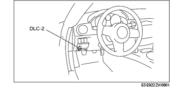

Workshop Manual ➭ BODY & ACCESSORIES ➭ INSTRUMENTATION/DRIVER INFO. ➭ INSTRUMENT CLUSTER INSPECTION
INSTRUMENT CLUSTER INSPECTION
id092200496400
{: #wp1058560}
Speedometer
Using the input/output check mode
- Inspect the speedometer by setting it to check code 12 of the input/output check mode. (See INSTRUMENT CLUSTER INPUT/OUTPUT CHECK MODE.)
Using a speedometer tester
-
Adjust the tire pressure to the specification.
-
Using a speedometer tester, verify that the tester reading is as indicated in the table below.
|
Allowable range (km/h) {: #wp1058695} |
|
|---|---|
|
20 {: #wp1058635} |
20-25 {: #wp1058637} |
|
40 {: #wp1058710} |
40-45 {: #wp1058713} |
|
60 {: #wp1058717} |
60-66 {: #wp1058720} |
|
80 {: #wp1058774} |
81-87 {: #wp1058777} |
|
100 {: #wp1058793} |
101-108 {: #wp1058796} |
|
120 {: #wp1058812} |
121-129 {: #wp1058815} |
|
140 {: #wp1058831} |
142-149 {: #wp1058834} |
|
Allowable range (mph) {: #wp1058915} |
|
|---|---|
|
10 {: #wp1058855} |
10-13 {: #wp1058857} |
|
20 {: #wp1058930} |
20-23 {: #wp1058933} |
|
30 {: #wp1058937} |
30-34 {: #wp1058940} |
|
40 {: #wp1058990} |
40-44 {: #wp1058993} |
|
50 {: #wp1059009} |
50-55 {: #wp1059012} |
|
60 {: #wp1059028} |
60-65 {: #wp1059031} |
|
70 {: #wp1059047} |
70-75 {: #wp1059050} |
|
80 {: #wp1059066} |
81-86 {: #wp1059069} |
- Verify that the speedometer reading is within the range indicated in the table.
• If the speedometer does not move or the indication is not within the allowable range, inspect the PCM and the related wiring harnesses.
- If the PCM and the related wiring harnesses are normal, replace the instrument cluster.
Tachometer
Using the input/output check mode
- Inspect the tachometer by setting it to check code 13 of the input/output check mode. (See INSTRUMENT CLUSTER INPUT/OUTPUT CHECK MODE.)
Using M-MDS or external diagnostic equipment
Caution
• If the engine speed exceeds the allowable range, the engine could be damaged. Therefore, when inspecting the tachometer, do not allow the engine speed to exceed the allowable range indication on the tachometer.
- Connect the M-MDS to the DLC-2 connector.{: #wp1059196}

- After the vehicle is identified, select the following items from the initial screen of the M-MDS.
• When using the IDS (laptop PC)
- Select the "Toolbox" tab. {: #wp1059250}- Select "DataLogger" {: #wp1059268}- Select "Modules" {: #wp1059281}- Select "IC"
• When using the PDS (Pocket PC)
- Select "Module Tests". {: #wp1059321}- Select "IC" {: #wp1059339}- Select "DataLogger"
- Compare the data monitor item (IC_TACHO) with the tachometer indication.
• If the tachometer does not operate properly, inspect the PCM and the related wiring harnesses.
- If the PCM and the related harnesses do not have any malfunction, replace the instrument cluster.
Fuel gauge
- Inspect the fuel gauge by setting it to check code 23 of the input/output check mode. (See INSTRUMENT CLUSTER INPUT/OUTPUT CHECK MODE.)
Water temperature gauge
- Inspect the water temperature gauge by setting it to check code 25 of the input/output check mode. (See INSTRUMENT CLUSTER INPUT/OUTPUT CHECK MODE.)
Oil Pressure gauge
- Inspect the oil pressure gauge by setting it to check code 28 of the input/output check mode. (See INSTRUMENT CLUSTER INPUT/OUTPUT CHECK MODE.)